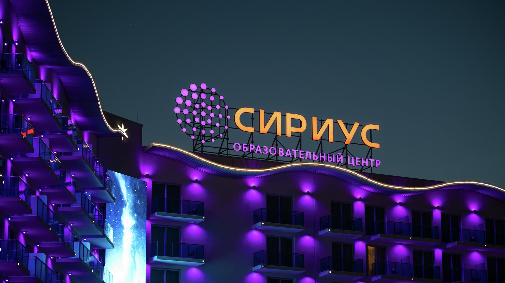

Общая информация:
"Сириус" - образовательный центр поддержки одарённых детей в России.
Он был создан в 2015 году образовательным фондом "Талант и успех" по инициативе президента России Владимира Путина на базе Олимпийского парка.
Проезд и пребывание в "Сириусе" для детей бесплатные. 